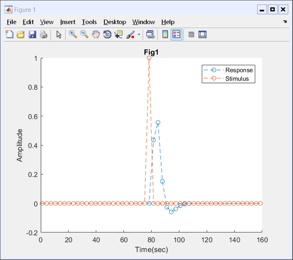
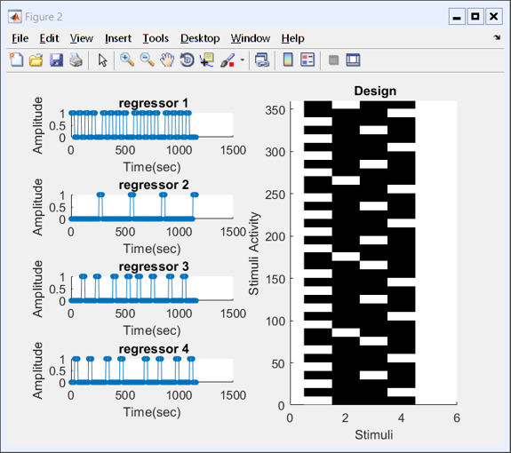
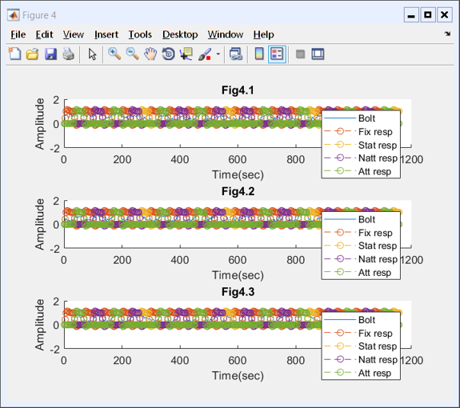
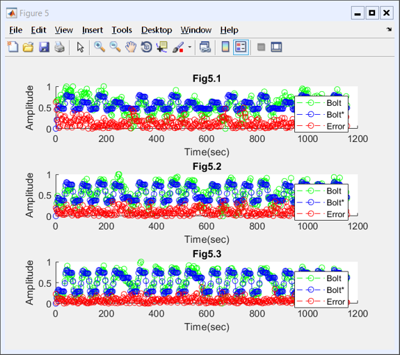
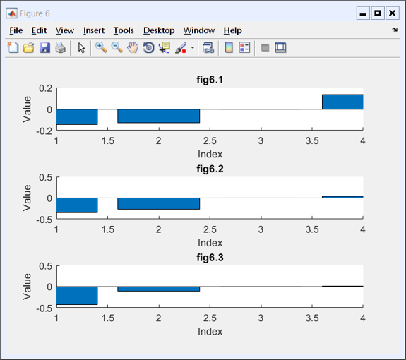
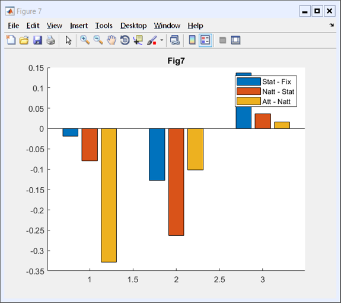

Code Appendix:
Contents
6.6A,B
load('opdracht_fMRI_klein.mat');
v1 = zeros(1,50);
v1(25) = 1;
r1 = conv(v1,hrf);
r1 = r1(1:50);
time = 1:3.22:50*3.22;
figure(1);
hold on;
title("Fig1");
plot(time,r1,'o--');
plot(time,v1,'o--');
legend("Response","Stimulus");
xlabel("Time(sec)");
ylabel("Amplitude");
hold off;

6.6C
load('opdracht_fMRI_klein.mat');
D = zeros(5,360);
time = 1:3.22:360*3.22;
D(1,:) = 1;
D(2,fix) = 1;
D(3,stat) = 1;
D(4,natt) = 1;
D(5,att) = 1;
D = D';
figure(2);
design(D,time,"");
resp = conv2(D,hrf);
resp = resp(1:360,:);
figure(3);
design(resp,time,"Response");

6.6D
figure(4)
for i=1:3
subplot(3,1,i)
hold on
title("Fig4." + i);
plot(time,bold(:,i));
for(j=1:4)
plot(time,resp(:,j+1),'o--');
end
legend("Bolt","Fix resp","Stat resp","Natt resp","Att resp");
xlabel("Time(sec)");
ylabel("Amplitude");
hold off
end
beta = zeros(5,3);
for i=1:3
beta(:,i) = regress(bold(:,i),resp);
end
fitted = resp*beta;
error = abs(bold - fitted);
figure(5)
for i=1:3
subplot(3,1,i)
hold on;
plot(time,bold(:,i),'go--');
plot(time,fitted(:,i),'bo--');
plot(time,error(:,i),'ro--');
xlabel("Time(sec)")
ylabel("Amplitude")
title("Fig5." + i);
legend("Bolt","Bolt*","Error");
hold off;
end
sse = sum(error.^2);
Warning: X is rank deficient to within machine precision.
Warning: X is rank deficient to within machine precision.
Warning: X is rank deficient to within machine precision.
 
6.6E
figure(6)
for i=1:3
subplot(3,1,i);
hold on;
title("fig6." + i);
bar(beta(2:end,i));
xlabel("Index")
ylabel("Value")
xlim([1,4]);
end
betastar = zeros(3,3)
betastar(1,:) = beta(2,:) - beta(3,:);
betastar(2,:) = beta(3,:) - beta(4,:);
betastar(3,:) = beta(5,:) - beta(4,:);
figure(7)
hold on;
title("Fig7");
bar(betastar);
legend("Stat - Fix", "Natt - Stat", "Att - Natt");
hold off
betastar =
0 0 0
0 0 0
0 0 0
 
7.4
load('detection.mat');
d1 = zeros(4,6);
d2 = zeros(4,6);
for i=1:6
d1(1,i) = sum(Resp1(:,1) == Stim1(:,i))/1000;
d2(1,i) = sum(Resp2(:,1) == Stim2(:,i))/1000;
d1(2,i) = sum(Resp1(:,1) == 1 & Stim1(:,i) ==0)/1000;
d2(2,i) = sum(Resp2(:,1) == 1 & Stim2(:,i) ==0)/1000;
[d1(3,i),d1(4,i)] = dcrit(d1(1,i),d1(2,i));
[d2(3,i),d2(4,i)] = dcrit(d2(1,i),d2(2,i));
end